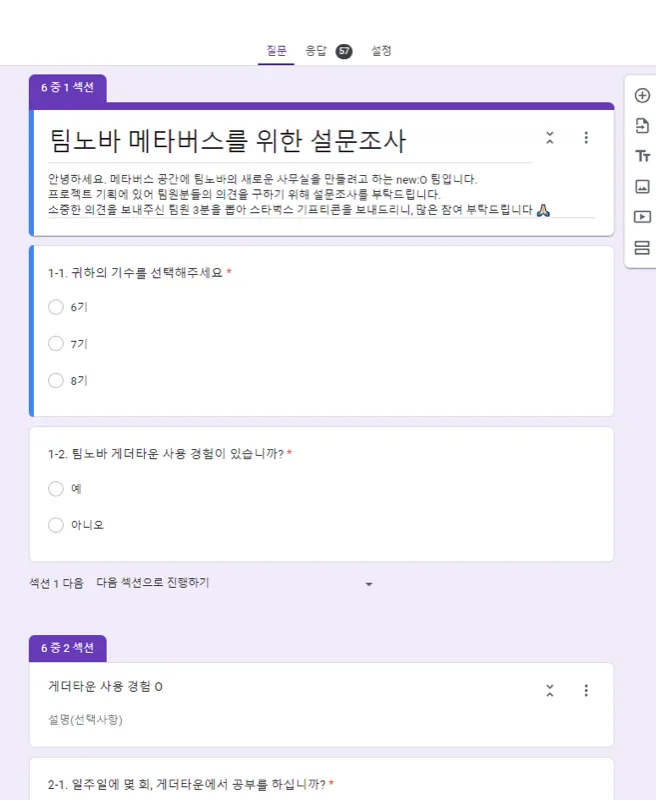
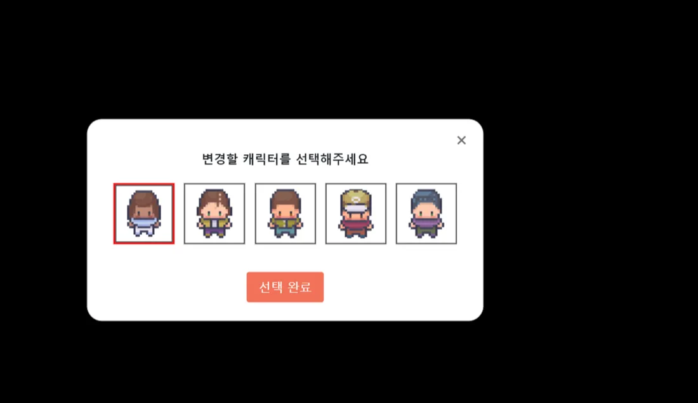
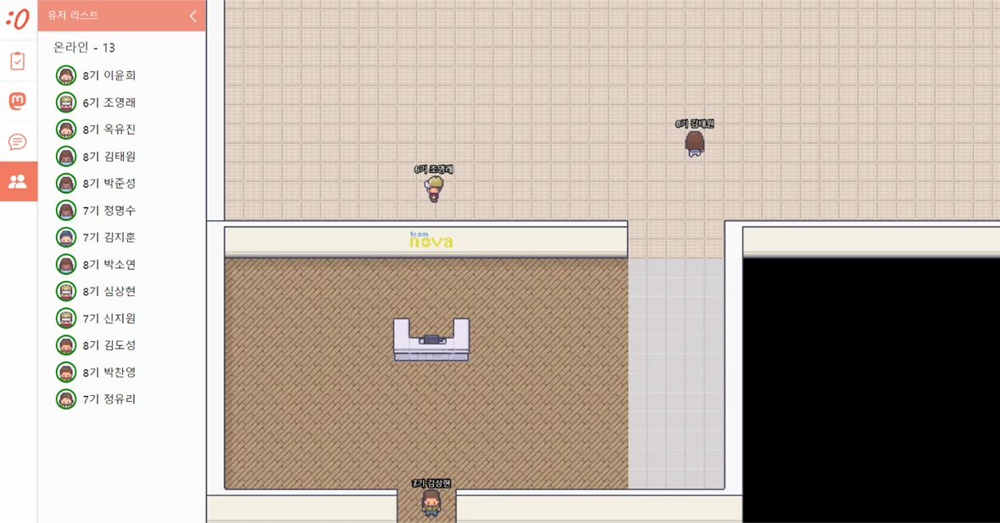
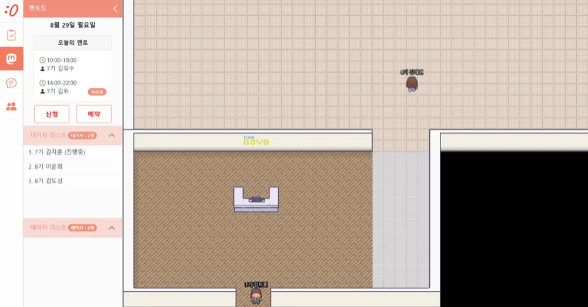
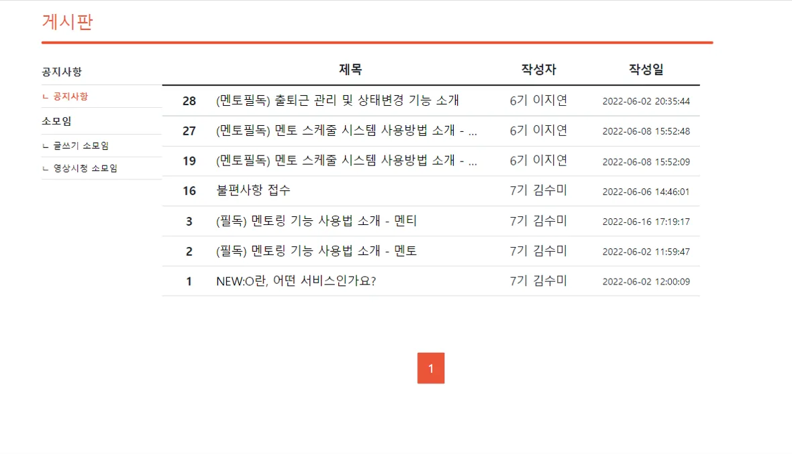
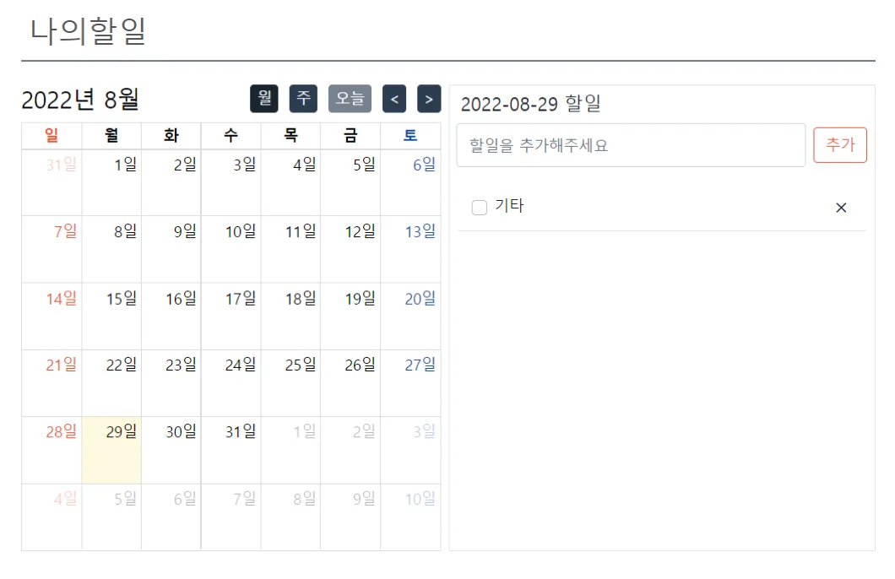

개발 전에 사전 설문을 했습니다. 기수를 구분하고, 게더타운을 써 본 적이 있는지, 있다면 일주일에 몇 번 그 공간에서 공부하는지를 물었습니다.
“메타버스가 필요한가”가 아니라 이미 하고 있는 행동의 빈도를 물은 게 요점입니다. 기존 도구를 얼마나 쓰는지 알면, 새 공간이 대체해야 할 수준이 정해집니다.
57건의 응답을 받아 만들 기능의 순서를 정했습니다.

코로나로 대면 활동이 멈춘 학원 커뮤니티를 도트 그래픽 메타버스 오피스로 옮긴 창업 프로젝트입니다. 만들기 전에 설문으로 실제 사용 습관부터 확인했습니다.

뉴오는 학원 직원이 팀노바 학생들을 관리하는 서비스입니다. 코로나로 대면 업무가 어려워지자 메타버스 공간에서 소통하고 학생을 관리하도록 바꿨습니다.
화상회의 도구는 회의가 있을 때만 켜지지만, 학원 커뮤니티에는 용건이 없어도 같은 공간에 있다는 감각이 필요했습니다. 그래서 접속하면 계속 머무는 2D 공간을 선택했습니다.
4명이 4개월간 진행했고, 제 기여는 다음과 같습니다.
한 사람이 한 레이어만 맡기 어려운 규모여서, 게시판·할 일·멘토링처럼 기능 하나를 화면부터 서버까지 한 사람이 끝까지 맡았습니다.
개발 전에 사전 설문을 했습니다. 기수를 구분하고, 게더타운을 써 본 적이 있는지, 있다면 일주일에 몇 번 그 공간에서 공부하는지를 물었습니다.
“메타버스가 필요한가”가 아니라 이미 하고 있는 행동의 빈도를 물은 게 요점입니다. 기존 도구를 얼마나 쓰는지 알면, 새 공간이 대체해야 할 수준이 정해집니다.
57건의 응답을 받아 만들 기능의 순서를 정했습니다.




멘토링에서는 “내가 몇 번째 대기인지”가 가장 중요하다고 보고, 시간표와 대기자 리스트를 같은 화면에 놓았습니다. 두 패널 모두 왼쪽에 열려 대화하면서도 맵이 보입니다.
메타버스 공간이 “머무는 곳”이라면, 웹은 공지·소모임 글·개인 할 일처럼 접속을 끊어도 남아야 하는 기능을 맡았습니다.


날짜를 고를 때마다 화면 전체가 바뀌면 흐름이 끊겨서, 달력은 두고 오른쪽 목록만 교체했습니다.
2D 공간과 캐릭터 이동은 Phaser.js, 실시간 위치·채팅은 Java WebSocket으로 처리했습니다. 자주 바뀌는 접속자 위치는 Redis에, 게시판·할 일처럼 남겨야 하는 데이터는 MariaDB에 저장했습니다.
뉴오는 제가 처음으로 만들기 전에 물어본 프로젝트입니다. 설문 57건이 알려 준 건 “메타버스를 원한다”가 아니라 “게더타운을 이 정도로 쓴다”였고, 그 수치가 기능의 우선순위가 됐습니다.
4개월 안에 공간과 웹 기능을 모두 넣으려면 무엇을 뺄지도 계속 정해야 했습니다. 결국 머무는 기능은 공간에, 남는 기능은 웹에 두는 구분이 프로젝트의 골격이 됐습니다.